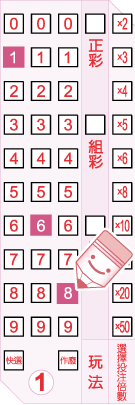
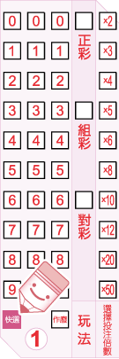
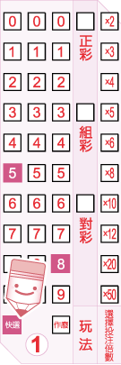
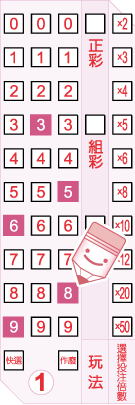
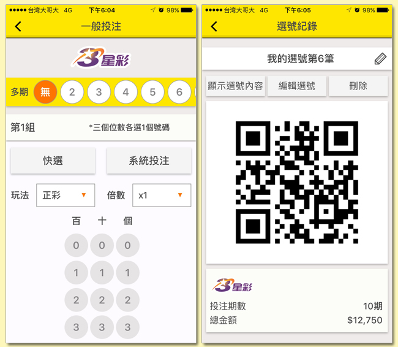

一、使用選號單進行投注：
* 注意，在同一張選號單上，各選號區可分別採用不同的投注方式。
選號單之正確劃記方式有三種，塗滿
1.劃記選號
|
A.自行選號
利用選號區的三個欄位(0~9)，從左至右各填選一個數字，以形成一組三位數號碼(選號範圍為 000~999)。 以下圖為例，如果您要投注168這組號碼，請在最左邊一欄填選1，第二欄填選6，最右邊一欄填選8。

|
B.快選
在選號區中，劃記「快選」，投注機將隨機產生一組三位數號碼。

|
|
C.部分快選
您可以只填選選號區中的1~2個欄位，並劃記「快選」，投注機將隨機產生剩下的號碼，形成一組三位數號碼。 以下圖為例，如果您只選擇第一和第三欄位(分別為5和8)，並劃記「快選」，剩下的第二欄位的號碼將由投注機隨機快選產生。

|
D.系統投注
您可以在選號區中任一欄位裡填選兩個〈含〉以上的數字進行投注，系統將就其選號排列出所有可能的號碼組合。 以下圖為例，如果您在第一欄填選的號碼為6和9，第二欄填選的號碼為3，第三欄填選的號碼為5和8，則您投注之所有號碼組合將為635、638、935、938。

|
A.正彩
如果您預測您的選號將與開出獎號的數字、順序完全相同，即可選擇此玩法。
B.組彩如果您預測您的選號將與開出獎號的三位數字相同，但順序可能不同，即可選擇此玩法。但如果您的選號為三個完全相同的數字(如：111)，則不得選擇此玩法。
C.對彩如果您預測您的選號將與開出獎號的前兩位數字或後兩位數字相同，順序亦同，則可選擇此玩法。
D.您可選擇用同一組選號投注「正彩」和「組彩」，同時填選此兩種玩法即可，不須分開投注。
注意，當您同時填選「正彩」和「組彩」時，投注金額將以兩注計算。
下圖的範例即為同時投注「正彩」和「組彩」。

您可就某組選號加倍投注，投注倍數最高為50倍。如果您不想加倍投注，則不需要填寫該欄。
您可以利用選號單上的「多期投注」欄位，就該張選號單上的投注內容連續投注2~24期(含當期)，如果您不想投注多期，則不需要填寫該欄。
* 注意，您在多期投注期間不得中途要求退/換彩券，但如果對中任何一期的
獎項，可直接至任一投注站或中國信託商業銀行(股)公司指定兌獎處兌獎，不需等到最後一期開獎結束。兌獎時，投注站或中國信託商業銀行(股)公司指定兌獎處將列印出一張「交換票」給您，供您在剩餘的有效期數內對獎。

* 購券者的選號若遇到當時該組選號之銷售注數上限時，即無法購得。